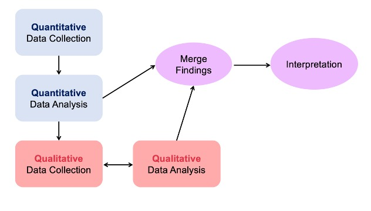

Hi I'm
Sleep disturbance is one of the top symptoms in breast cancer survivors. Based on Lazarus and Folkman's transactional stress and coping model, stressors related to breast cancer may affect sleep health through the cognitive appraisal and coping process. Sleep deficiency, which incorporates sleep disturbance, was associated with poor cognitive ability, quality of life, and cancer prognosis. Young women with breast cancer (YWBC) have a unique presentation of breast cancer and the developmental stage of life, which makes their survivorship experience distinctive from older women. However, sleep health in the younger subgroup of breast cancer survivors has not been assessed. To understand the relationship between stressors, cognitive appraisal, coping, and sleep experiences in YWBC, the study will use a sequential explanatory mixed methods design. The mixed methods approach will elicit critical viewpoints that cannot be ascertained from the quantitative method alone. I will collect and analyze quantitative data first, informing sampling and data collection for the subsequent qualitative phase. The integration of quantitative and qualitative data is a hallmark of mixed methods research and will be the final analysis step. The specific aims are to 1) evaluate the relationship between stressors, cognitive appraisal, coping, and sleep health characteristics; 2) explore the perception of breast cancer, coping strategies, and sleep experiences; and 3) generate a more comprehensive understanding of relationships between cognitive appraisal, coping, and sleep health in YWBC through the integration of the quantitative and qualitative data.

Being updated!